Er is sinds de TPOD-standaard 3.0.0 nog maar één type waardelijst, de limitatieve waardelijst. Dit is een lijst met vooraf gedefinieerde waarden waaruit bevoegd gezagen kunnen kiezen bij het annoteren. Deze waardelijsten worden centraal beheerd door Geonovum. De waardelijsten zijn toegankelijk via de Stelselcatalogus Omgevingswet. Hierin zijn alle versies van de waardelijsten uit het IMOW opgenomen. Aangezien een wijziging direct effect heeft op de werking en functionaliteit van de applicaties van DSO-LV en LVBB, kunnen ze alleen beheersmatig doorgevoerd worden. Hiervoor is een uitgebreide procedure ontwikkeld.
Aanvrager
De bevoegde gezagen kunnen de waardelijsten raadplegen in de stelselcatalogus. Ze kunnen de waarden uit de waardelijsten gebruiken in hun plansoftware. Mochten ze waarden missen, dan kunnen ze deze aanvragen bij Geonovum.
Stelselcatalogus Omgevingswet
De stelselcatalogus is de plek waar alle versies van de waardelijsten voor iedereen toegankelijk worden gepubliceerd:
stelselcatalogus.omgevingswet.overheid.nl/waardelijsten/overview
Onderdeel van het publicatieproces is de export naar register.geostandaarden.nl. De stelselcatalogus neemt de bestanden die hierop gepubliceerd worden over. Ook ontsluit de stelselcatalogus de waardelijsten met behulp van een API. Alle aangesloten instanties kunnen daarmee waarden en waardelijsten inlezen.
Het kan gebeuren dat er wat fout gaat en de stelselcatalogus de nieuwe waardelijsten niet toont. In dit geval kun je contact opnemen met de de stelselcatalogus. De namen en mailadressen zijn opgenomen in hoofdstuk 4.
OZON
De waardelijsten worden na publicatie in de stelselcatalogus door OZON in de landelijke voorzieningen geïmplementeerd. Het is belangrijk om de publicatie van een nieuwe versie vooraf bij OZON aan te kondigen, zodat ze hiermee rekening kunnen houden in hun sprintplanning. OZON moet bijvoorbeeld validatieregels toevoegen om ervoor te zorgen dat nieuwe waarden gebruikt kunnen worden of dat bepaalde waarden vervallen. Ook moeten de waarden ingelezen worden in de database, zodat ze zichtbaar gemaakt kunnen worden in de viewer ‘Regels op de kaart’.
Mocht er wat fout gaan bij de implementatie of het duurt langer dan verwacht, dan kun je contact opnemen met OZON. De namen en mailadressen zijn opgenomen in hoofdstuk 4.
Softwareleveranciers
De softwareleveranciers moeten de nieuwe waardelijsten implementeren in de software. Soms gebeurt dit handmatig (op basis van de service-producten op de Geonovum-website), terwijl andere softwareleveranciers automatisch de waarden uit de Stelselcatalogus overnemen. In het laatste geval zullen gebruikers al heel snel de nieuwe waarden in de software kunnen gebruiken, terwijl OZON de nieuwe waarden nog niet geïmplementeerd heeft. Omdat de waarden nog niet in de landelijke voorzieningen gebruikt kunnen worden, kan dit vragen oproepen. Vandaar dat de attenderingsmail pas wordt gestuurd na de implementatie door OZON. Zie ook subparagraaf 1.7.4.
Wanneer een gewenste waarde niet in een waardelijst voorkomt, kan iedereen (doorgaans medewerkers van bevoegde gezagen en adviesbureaus) een verzoek tot wijziging van de waardelijst indienen bij Geonovum. Hiervoor is een aanvraagformulier op onderstaande url beschikbaar. Hiermee is de procedure gestart.
geonovum.atlassian.net/servicedesk/customer/portal/4/group/6/create/213
Vervolgens wordt dit verzoek administratief in de Servicedesk in JIRA verwerkt.
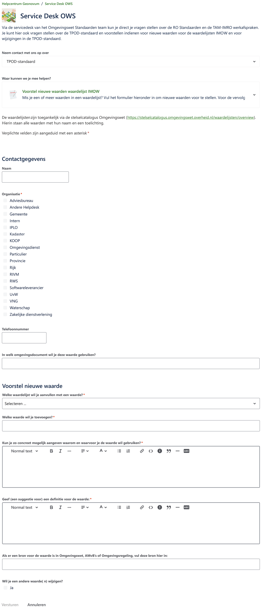
Een aanvraag wordt op drie plaatsen geadministreerd. In de JIRA-helpdesk komt de aanvraag binnen en wordt de beoordeling teruggekoppeld. Ook worden twee Excel-spreadsheets bijgehouden ten behoeve van de interne controle, inhoudelijk en procesmatig.
Aanvragen komen binnen via het JIRA-aanvraagformulier (Figuur 1). Dit formulier stroomt automatisch door naar JIRA-helpdesk. Enkele stappen moet je echter nog handmatig aanpassen:
Voeg de titel toe. De standaardopbouw is ‘Waardelijst aanvulling’ + [bevoegd gezag] + [waarde].
Plaats bij veld ‘Melder’ het mailadres van de aanvrager.
Selecteer bij veld ‘TPOD Onderwerp’ optie ‘Annoteren’.
Selecteer bij veld ‘Type Standaard’ optie ‘TPOD’.
Selecteer bij veld ‘Status’ optie ‘Wachten’.
Verander het aanvraagtype in ‘Waardelijst’ door op het gekleurde vlakje boven de titel te klikken. In het vervolgscherm moet je de regel ‘nieuwe vraagtype’ door middel het dropdown-menu de optie ‘Waardelijst’ selecteren. Klik dan op ‘Volgende’ en ‘Opslaan’.
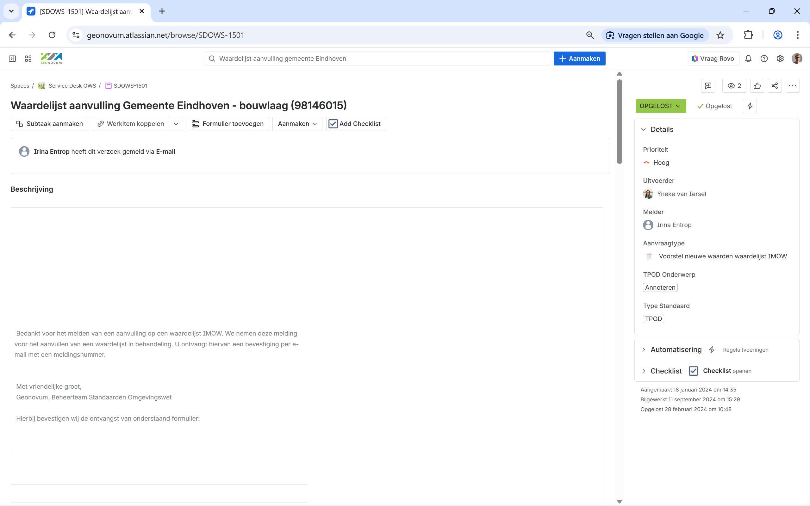
Het aanvraagformulier kan nog onbekend zijn voor indieners, dus kan het voorkomen dat je een aanvraag via een ander kanaal ontvangt. Wanneer dit gebeurt, kun je afwegen hoe je deze aanvraag verwerkt:
De aanvrager verzoeken om alsnog het aanvraagformulier in te vullen.
Als de aanvraag in JIRA is binnengekomen als mailverzoek, kun je enkel het vraagtype aanpassen naar ‘Waardelijst’. Het moet in ieder geval duidelijk zijn voor welke waardelijst en met welke reden de waarde wordt aangevraagd. Ontbreekt er informatie om de beoordeling te kunnen doen, verzoek de aanvrager dan om alsnog het aanvraagformulier in te vullen.
Om de stappen allemaal zorgvuldig te doorlopen is er een Excel-spreadsheet ‘Checklist proces wijzigen waardelijsten.xlsx’ (DSO PR04 Standaarden\Waardelijsten\Proces voorstellen nieuwe waarde) gemaakt. Hierin kun je op afzonderlijke tabbladen bijhouden hoe de voortgang van een wijziging verloopt. Dit kan naar keuze voor een versie van de waardelijsten, maar ook voor afzonderlijke aangevraagde waarden. Vaak worden verschillende aanvragen samengenomen in een wijziging. Deze aanvragen kun je dan samen opnemen op één tabblad met een bepaald versienummer. Voor elke stap in het proces is een rij opgenomen, die je kunt afvinken als de stap is afgerond.
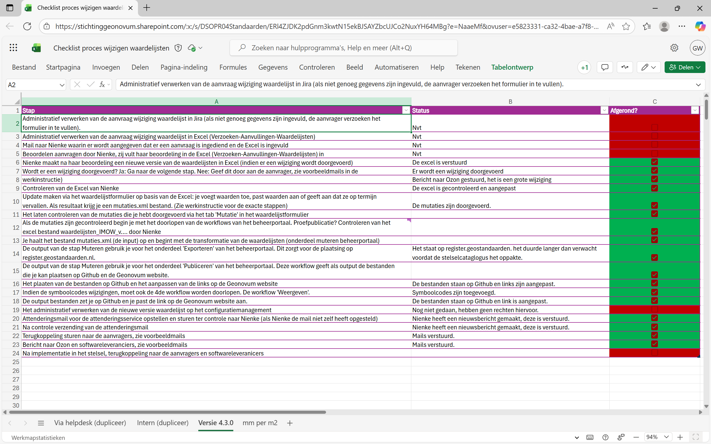
Het stappenplan hangt af van de manier waarop de wijziging is aangevraagd. Als het gaat om een intern geïnitieerde wijziging is er een kortere procedure van toepassing en kun je gelijk beginnen met het wijzigen van de waardelijsten. Er zijn daarom twee tabbladen ‘Via helpdesk’ en ‘Intern’ met verschillende stappenplannen. Deze zijn bedoeld om te kopiëren en te gebruiken in nieuwe tabbladen. Na een aanvraag kun je deze gelijk opnemen in de Excel-spreadsheet door een nieuw tabblad aan te maken of de aanvraag op een al bestaand tabblad te verwerken.
Voor de interne controle wordt Excel-spreadsheet ‘Verzoeken-Aanvullingen-Waardelijsten.xlsx’ (DSO PR04 Standaarden\Waardelijsten\Proces voorstellen nieuwe waarde) gebruikt. Hierin worden alle nieuwe aanvragen opgenomen op het tabblad ‘Nieuwe meldingen’. Neem de gegevens in de kolommen over uit het aanvraagformulier. De kolommen ‘Overgenomen/afgewezen, hoe/waarom’ en ‘Update’ worden na de inhoudelijke beoordeling door Nienke Jansen ingevuld. Meldingen die al beoordeeld zijn, staan op het tabblad ‘Beoordeelde meldingen’. Dit is een historisch overzicht van alle aangevraagde wijzigingen met de desbetreffende beoordeling. Meldingen die nog te behandelen zijn en op wachten staan, staan op het tabblad ‘Nog te behandelen (wachten)’.
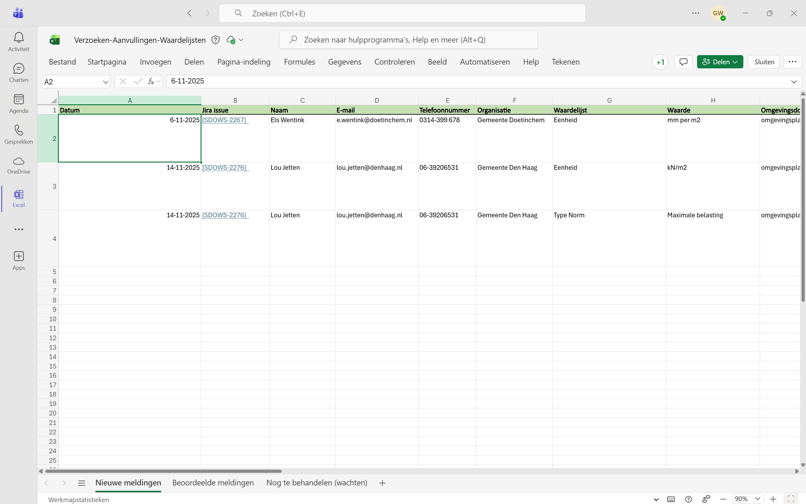
Als de aanvraag administratief is verwerkt op alle drie locaties, stuur je een mail naar Nienke Jansen waarbij je aangeeft dat er een aanvraag is ingediend. Belangrijk is dat je de aanvraag op de volgende punten controleert en dit indien van toepassing aangeeft in de mail.
Is er eerder een vergelijkbare waarde aangevraagd?
Heeft een aangevraagde waarde eerder bestaan maar is inmiddels weer vervallen?
Wijzigingen doorvoeren in Excel-spreadsheet ‘Verzoeken-Aanvullingen-Waardelijsten.xlsx’
Elke twee weken worden de aanvragen beoordeeld door Nienke Jansen. Zij vult in Excel-spreadsheet ‘Verzoeken-Aanvullingen-Waardelijsten.xlsx’ de kolom ‘Overgenomen/afgewezen, hoe/waarom’ in. Zij beoordeelt of de waarde niet al voorkomt, of de waarde systematisch in de waardelijst past en of de waarde past bij de gewenste toepassing van de standaard en de wet.
Wanneer het voorstel wordt afgewezen, dan stel je een terugkoppelbericht op voor de aanvrager. In dit bericht licht je toe waarom de waarde niet doorgevoerd wordt. Je kan hiervoor de input van Nienke Jansen gebruiken die ze in de Excel-spreadsheet heeft ingevuld. Wanneer de voorgestelde nieuwe waarde positief is beoordeeld, dan volgt het doorvoeren van de gewijzigde waarden, zie ‘Gewijzigde waarden doorvoeren (stap 3)’.
Terugkoppeling naar de aanvrager
Na de inhoudelijke controle moeten de aanvragers van de waarden persoonlijk geattendeerd worden of hun voorstel voor een waarde wel, niet of gewijzigd wordt overgenomen. Als de waarde (gewijzigd) wordt overgenomen, krijgt de aanvrager een tweede mail op het moment dat de waarde daadwerkelijk in het stelsel beschikbaar is. Belangrijk hierbij is om te vermelden dat de implementatie bij OZON en de softwareleverancier even kan duren.
De volgende voorbeeldtekst kan gebruikt worden voor terugkoppeling aan de aanvrager als het voorstel voor een waarde gewijzigd of ongewijzigd wordt overgenomen:
Beste [naam van de aanvrager] ,
Afgelopen week hebben we bij Geonovum alle aanvragen en wijzigingsverzoeken voor de waardelijsten beoordeeld. Jij hebt op [datum] een verzoek ingediend voor het toevoegen van waarden aan waardelijst [naam van de waardelijst] . Je stelde de waarde(n) [naam van de waarde(n)] voor. Via dit bericht wil ik je hierover een update geven.
Bedankt voor het indienen van jouw aanvraag. We hebben het voorstel als volgt beoordeeld:
Het voorstel voor waarde [voorgestelde naam] hebben we (gewijzigd) overgenomen, de waarde [naam van de waarde] is aan waardelijst [naam van de waardelijst] toegevoegd.
We gaan binnenkort de nieuwe versie van de waardelijsten publiceren. Het is daarna aan de ketenpartners en de softwareleveranciers om de nieuwe versie van de waardelijsten te implementeren. Het zal enkele weken duren voordat het gehele proces is doorlopen en je de waarde kunt gebruiken. Als de waarde daadwerkelijk beschikbaar is, laten we dit weten.
Met vriendelijke groet,
De volgende voorbeeldtekst kan gebruikt worden voor terugkoppeling aan de aanvrager als het voorstel voor een waarde niet wordt overgenomen:
Beste [naam van de aanvrager] ,
Afgelopen week hebben we bij Geonovum alle aanvragen voor de waardelijsten beoordeeld. Jij hebt op [datum] een verzoek ingediend voor de waardelijst [naam van de waardelijst] . Je stelde de waarde(n) [naam van de waarde(n)] voor. Via dit bericht wil ik je hierover een update geven.
Bedankt voor het indienen van jouw aanvraag. We hebben besloten om jouw aanvraag niet door te voeren. De redenen hiervoor zijn:
[redenen (zie Excel-spreadsheet ‘Verzoeken-Aanvullingen-Waardelijsten.xlsx’)] .
Met vriendelijke groet,
Bij de start van de voorbereidingen voor de publicatie van een nieuwe versie van de waardelijsten maakt Nienke Jansen een Excel-document aan en zet deze in de map ‘DSO/PR04_Waardelijsten_Proces/voorstellen nieuwe waarden’. Hierin houdt ze de wijzigingen per waardelijst bij door ze te markeren.
Een gele markering geeft aan dat een nieuwe waarde wordt toegevoegd of dat een onderdeel van een bestaande waarde wordt gewijzigd, bijvoorbeeld de definitie.
Een rode markering geeft aan dat een waarde wordt aangemerkt als vervallen (deprecated = true) of daadwerkelijk gaat vervallen. Als de waarde daadwerkelijk vervalt, wordt de waarde ook doorgestreept.
Belangrijk!
Zorg dat je de wijzigingen die in de Excel zijn doorgevoerd goed controleert op inhoudelijke fouten en taalfouten. Let goed op of de wijzigingen overeenkomen met de Excel ‘Verzoeken-Aanvullingen-Waardelijsten’. Het gaat hier dus om de controle van de Excel voordat je de wijzigingen doorvoert in het formulier (stap 5).
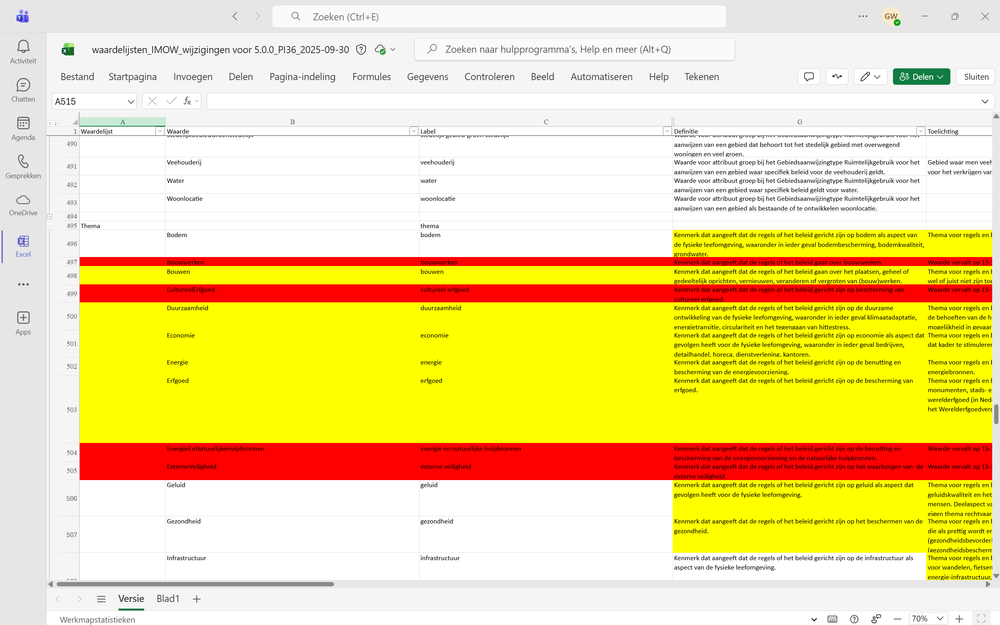
Vervolgens stel je de publicatiedatum vast. Met het vaststellen van de publicatiedatum van de nieuwe versie van de waardelijsten sluit het beoordelingsproces af. Dit is het moment dat Nienke Jansen in het leveranciersoverleg de nieuwe versie aankondigt en in het planningsoverleg met OZON afspreekt in welke sprint ze de nieuwe versie kunnen implementeren. Je verstuurt een mail naar OZON (mail: zm_ozon.dso@kadaster.nl) om ze officieel te attenderen op de publicatie van de nieuwe versie, zodat ze hiervoor alvast tijd kunnen vrijmaken.
Beste collega van OZON,
Bij Geonovum hebben we aanvragen voor wijzigingen in de waardelijsten beoordeeld. We gaan een nieuwe versie [versie] van de waardelijsten publiceren. Daarom sturen wij alvast een bericht met het verzoek om de implementatie in de OZON-database in de sprintplanning op te nemen. Wij verwachten de waardelijsten op [publicatiedatum] te publiceren.
Met vriendelijke groet,
Alle wijzigingen zijn in stap 3 (paragraaf 1.4) bijgehouden in een Excel-spreadsheet. De gemarkeerde wijzigingen moeten overgenomen worden in webformulier ‘Muteren waardelijsten’. Hiermee wordt een bestand ‘mutaties.xml’ gemaakt dat alle wijzigingen bevat, inclusief de metadata ten behoeve van de release notes. De werking van het webformulier is beschreven in hoofdstuk 1.8.2.
Belangrijk!
Laat een andere beheerder in het webformulier alle mutaties goed controleren. Als alle mutaties op ‘akkoord’ staan, kun je verder naar stap 6. Hoe deze review werkt, lees je in paragraaf 2.3. Hierin staat een uitleg over het tabblad ‘mutaties’.
Het beheerportaal voert workflows of werkprocessen uit. Je opent het beheerportaal via de link https://beheer.geonovum.nl/. Voor het inloggen op het beheerportaal heb je rechten nodig. Deze kun je aanvragen bij Gerard Wolbers. Na het opstarten van het beheerportaal zie je een overzicht van alle projecten, die op hun beurt weer zijn ingedeeld naar onderwerp. Bij ‘DSO/Waardelijsten’ staan vijf workflows, die uitgevoerd moeten worden om de nieuwe versie van de waardelijsten beschikbaar te maken.
Belangrijk!
Het startpunt van alle workflows voor het publiceren van waardelijsten is het bestand ‘mutaties.xml’. Dit bestand bevat alle wijzigingen, inclusief de benodigde informatie voor het maken van de release notes. Je krijgt dit bestand als je het webformulier hebt ingevuld zoals omschreven in stap 5 (paragraaf 1.6). Hoe je bestand ‘mutaties.xml’ kunt downloaden staat beschreven in paragraaf 2.6. Van elke workflow is aangegeven welke bestanden je moet uploaden.
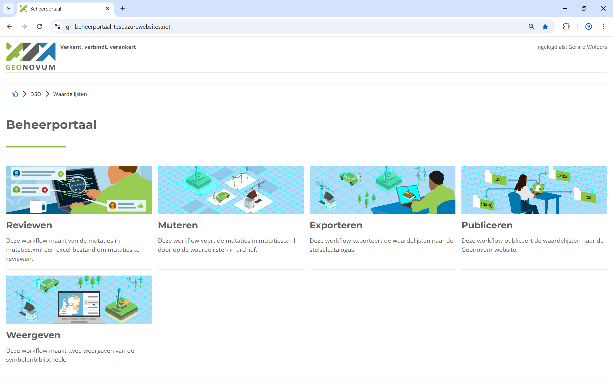
Voordat de werkelijke publicatie start, moeten de ingevoerde mutaties gecontroleerd worden door Nienke Jansen. Workflow ‘Reviewen’ maakt op basis van bestand ‘mutaties.xml’ een Excel-spreadsheet van alle gewijzigde waarden. Het output-bestand heet mutaties.xlsx. In deze Excel-spreadsheet is voor elke wijziging zichtbaar gemaakt wat er is aangepast, met een status (‘toegevoegd’, ‘verwijderd’, ‘aangepast’). Je vraagt aan Nienke Jansen of ze het review-bestand wil controleren. Na haar akkoord ga je verder met de volgende stappen:
Maak in map ‘DSO PR04 Standaarden\Waardelijsten\Proces voorstellen nieuwe waarde’ een nieuwe map aan met de naam ‘Waardelijsten_IMOW_v[Versienummer]’. Alle bestanden van de publicatie komen bij elkaar in deze map te staan.
Plaats het review-bestand in deze map.
Ga door met workflow ‘Muteren’.
De tweede workflow in het proces is om de mutaties door te voeren op de ‘waardelijsten in archief’. Dit doe je door het bestand ‘mutaties.xml’ te uploaden. De knop ‘workflow starten’ start de transformatie. Het resultaat is tweeledig:
De nieuwe versie van de waardelijsten wordt toegevoegd aan de repository ‘Geonovum/DSO_waardelijsten/archief’.
De output is een zip-bestand ‘output.zip’ met de volgende indeling:
Bestand ‘informatie.txt’ bevat de release notes als tekstbestand
Map ‘overzicht’:
Bestand ‘index.html’ bevat de release notes in html
Bestand ‘overzicht.css’ bevat de layout
Bestand ‘waardelijsten.xml’ bevat de laatste versie van de waardelijsten.
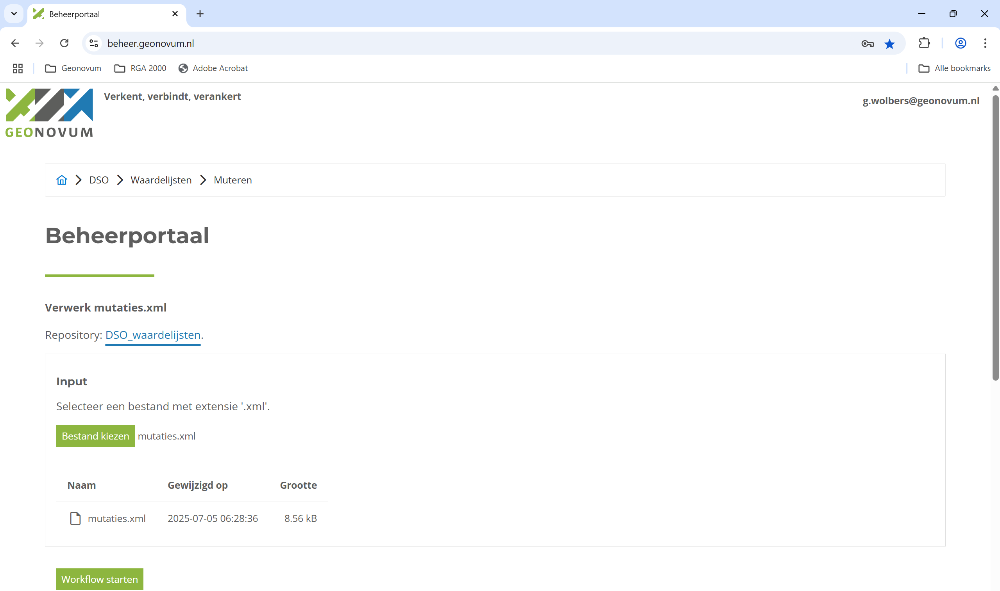
Het archief staat in de repository ‘Geonovum/DSO_waardelijsten’. Door deze workflow uit te voeren heb je daadwerkelijk de mutaties doorgevoerd in een nieuwe versie van de waardelijsten. De output-bestanden gebruik je in de volgende workflows.
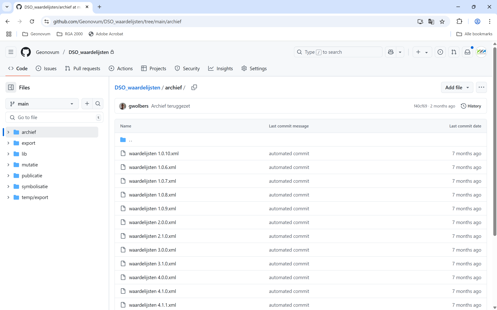
De workflow ‘Exporteren’ heeft de volgende bestanden als invoer nodig:
Van bestand ‘output.zip’ wordt bestand ‘informatie.txt’ en map ‘overzicht’ doorgegeven.
De waardelijsten in de archiefmap op repository ‘Geonovum/DSO_waardelijsten’.
Bij ‘input’ kun je het resultaat ‘output.zip’ uit workflow ‘Muteren’ uploaden. Het beheerportaal weet welke bestanden het moet gebruiken.
De transformatie zet alle versies van de waardelijsten om naar een json-bestand ‘export.json’ en geeft bestand ‘informatie.txt’ en map ‘overzicht’ door naar register.geostandaarden.nl. De bestanden worden voor twee doeleinden gebruikt:
De stelselcatalogus controleert voortdurend of er op ‘https://register.geostandaarden.nl/waardelijst/imow/’ een nieuwe versie van ‘export.json’ is geplaatst. Dit bestand dient als invoer voor de database op de stelselcatalogus. Het inladen door de stelselcatalogus heeft een doorlooptijd van ongeveer twee uur. Daarna is de weergave op de stelselcatalogus bijgewerkt en kunnen afnemers de nieuwe versie van de waardelijsten via de API ophalen.
Map ‘overzicht’ bevat de release notes van de laatste versie van de waardelijsten in html-formaat. Op de Wegwijzer TPOD staat een permanente link naar ‘https://register.geostandaarden.nl/waardelijst/imow/overzicht/index.html’. Aangezien het wenselijk is om ook de release notes van eerdere versies op de Wegwijzer TPOD te behouden, kun je nog aparte links naar oudere versies opnemen. Dit doe je door aan de link de publicatiedatum toe te voegen: ‘https://register.geostandaarden.nl/waardelijst/imow/2025-10-10/overzicht/index.html’.
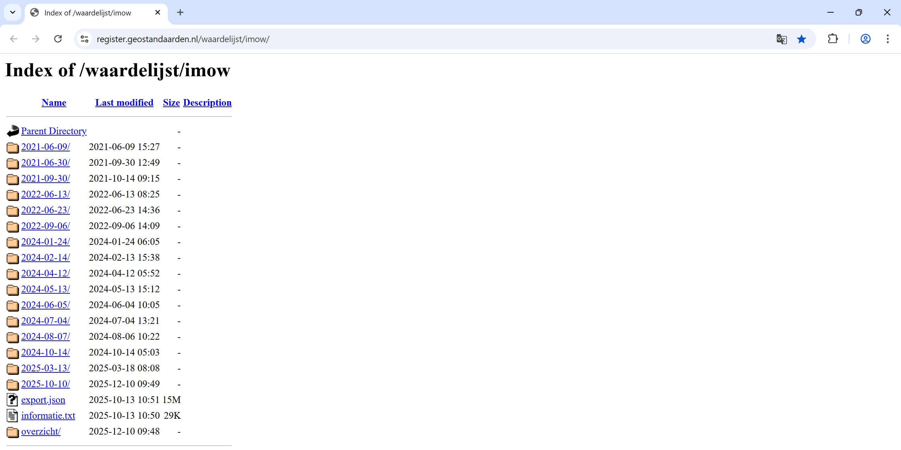
Omdat bestand ‘export.json’ alle versies van de waardelijsten bevat, zal dit bestand steeds verder groeien. Het zal onvermijdelijk zijn om op termijn oudere versies van de waardelijsten weg te laten. Dit kan door deze versies in repository ‘Geonovum/DSO_waardelijsten’ uit de map ‘archief’ te verwijderen.
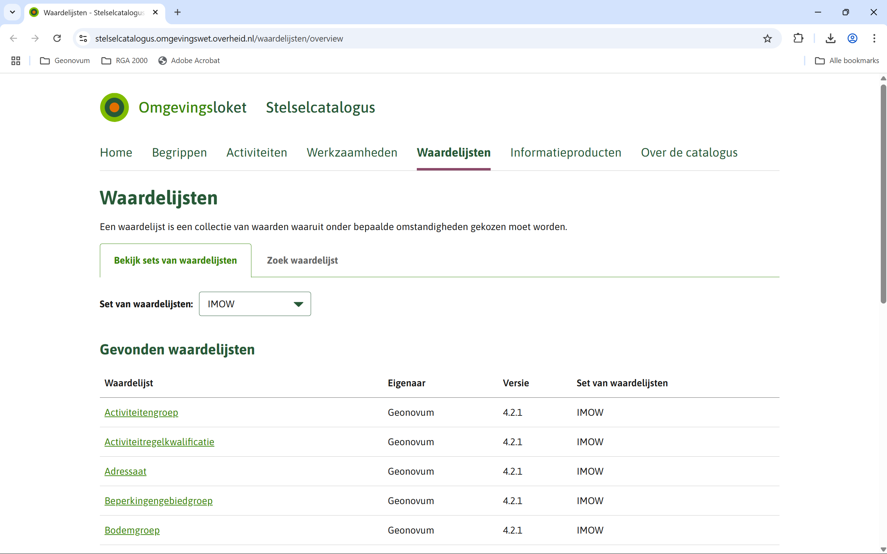
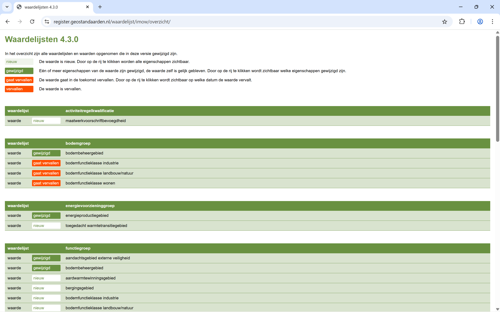
De input van workflow ‘Publiceren’ is ook het resultaat ‘output.zip’ uit de workflow ‘Muteren’. Deze zip bevat vier bestanden: ‘index.html’, ‘informatie.txt’, ‘overzicht.css’ en ‘waardelijsten.xml’. Workflow ‘Publiceren’ levert verschillende bestanden op die door applicaties van leveranciers worden gebruikt. Het zorgt ervoor dat de bestanden in het juiste bestandsformaat op GitHub en de website komen te staan. Het resultaat wordt opgeslagen in repository ‘Geonovum/TPOD-waardelijsten/[publicatiedatum]’. Binnen deze map wordt ook een map ‘overzicht IMOW [versie]’ gemaakt met de bestanden ten behoeve van de Wegwijzer TPOD.
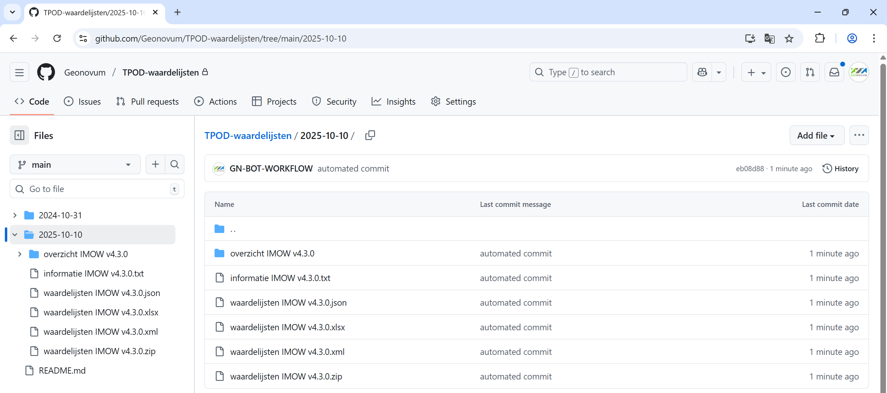
De output-bestanden zet je ook in de interne map ‘Waardelijsten_IMOW_v[Versienummer]’ in ‘DSO PR04 Standaarden\Waardelijsten\Proces voorstellen nieuwe waarde’ (subparagraaf 1.7.1), zodat bij een volgende wijziging de bestanden als basis gebruikt kunnen worden.
Op de Geonovum-website staan twee verwijzingen naar de nieuwe versie van de waardelijsten:
Bij ‘Onderdelen van het Toepassingsprofiel Omgevingsdocumenten’ staat een verwijzing naar de waardelijsten op de stelselcatalogus. De verwijzing zelf hoeft niet aangepast te worden, het versienummer in de tweede kolom wel.
Bij ‘Service-producten’ staat een verwijzing naar het zip-bestand met de nieuwe versie van de waardelijsten. In de verwijzing moeten publicatiedatum en versie aangepast worden. Daarnaast moet het versienummer in de tweede kolom aangepast worden. Als je de verwijzing hebt aangepast, wordt automatisch het zip-bestand gedonload dat net op GitHub is geplaatst.
https://github.com/Geonovum/TPOD-waardelijsten/raw/main/[publicatiedatum]/ waardelijsten_IMOW_[versie].zip
Op de Geonovum-website worden ook weergaven van de symbolenbibliotheek als service-product gepubliceerd. Omdat mutaties op waardelijsten invloed hebben op de weergaven van de symbolenbibliotheek, is de workflow ‘Weergeven’ toegevoegd aan de workflow.
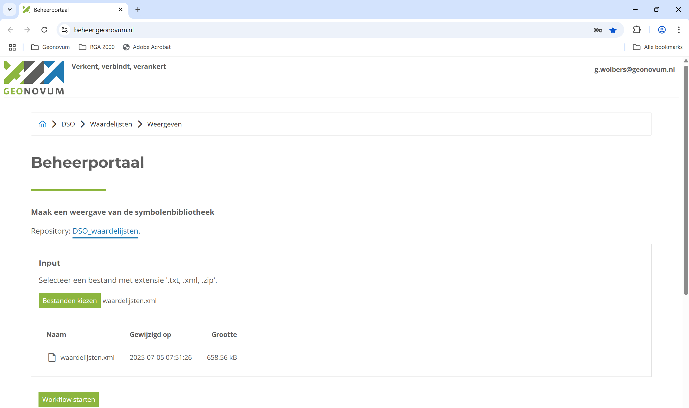
De workflow voert twee taken uit:
Het genereert een map ‘applicatie’ met twee bestanden: ‘voorwaarden.xml’ en ‘symbolisatie.xml’. Deze bestanden worden gebruikt door webformulier ‘Muteren waardelijsten’. Omdat deze bestanden statisch zijn, hoeven ze niet vervangen te worden.
Het genereert een map ‘weergave’ met twee bestanden: ‘symbolisatie.xhtml’ en ‘waardelijsten.xhtml’. Door de cursor over de symboolcodes te bewegen wordt de detailinformatie zichtbaar.
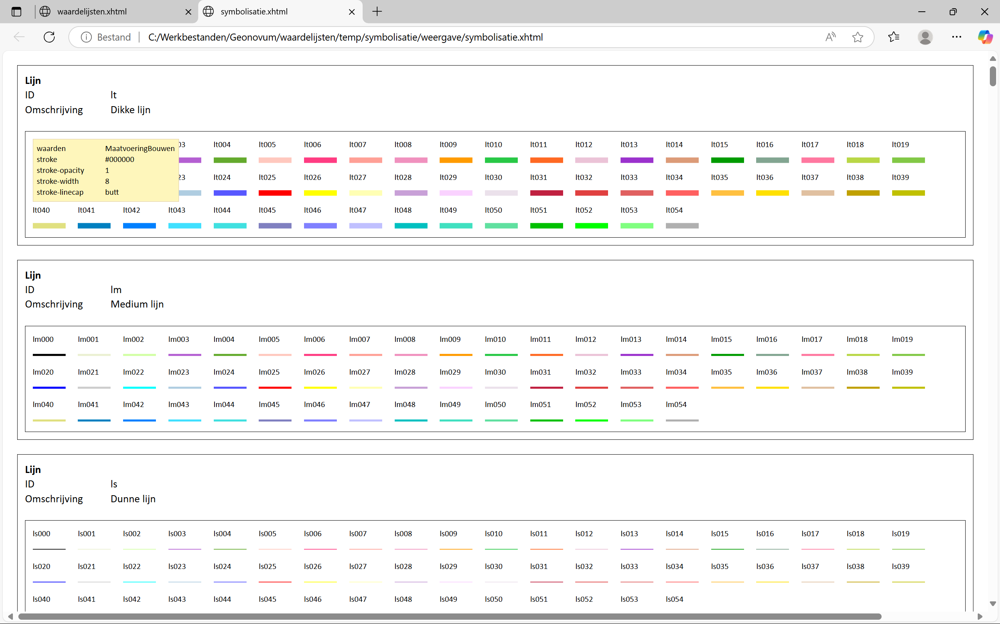
Nadat de nieuwe versie van de waardelijsten zijn gepubliceerd, moeten diverse partijen op de hoogte worden gebracht:
OZON om ze op de hoogte te brengen dat de nieuwe versie van de waardelijsten beschikbaar is in de stelselcatalogus;
Softwareleveranciers zodat ze de implementatie in hun software kunnen voorbereiden.
Attenderingsmail naar OZON
Het is belangrijk dat OZON op de hoogte wordt gebracht zodat ze kunnen starten met de implementatie van de nieuwe versie van de waardelijsten. Stuur onderstaande voorbeeldmail naar OZON (mail: zm_ozon.dso@kadaster.nl) om ze er officieel op te attenderen dat de nieuwe versie beschikbaar is op de stelselcatalogus.
Beste collega van OZON,
Geonovum heeft een nieuwe versie van de waardelijsten IMOW gepubliceerd (versie [versie] ) in de stelselcatalogus. Wij verzoeken jullie om de nieuwe versie van de waardelijsten in de OZON-database te implementeren.
Wij horen graag van jullie zodra de nieuwe versie van de waardelijsten geïmplementeerd is, zodat wij dat kunnen melden aan gebruikers van de standaard.
Met vriendelijke groet,
Attenderingsmail naar softwareleveranciers
Nadat ook de nieuwe versie van de waardelijsten op de standaardenpagina is gepubliceerd, moeten ook de softwareleveranciers op de hoogte worden gebracht. Zij moeten namelijk deze nieuwe versie (handmatig) verwerken in hun software voordat gebruikers deze nieuwe versie kunnen toepassen. Stuur daarvoor onderstaande voorbeeldmail naar de contactpersonen. De namen en mailadressen zijn opgenomen in hoofdstuk 4. Je kan het ook aankondigen tijdens de softwareleverancierhalfuurtjes dat er een nieuwe publicatie van de waardelijsten aankomt.
Beste leveranciers,
Geonovum heeft een nieuwe versie van de waardelijsten IMOW gepubliceerd (versie [versie]). Deze versie staat in de stelselcatalogus. We bieden ook weer de zip met de nieuwe versie van de waardelijsten in diverse bestandsformaten aan op onze standaardenpagina, samen met een overzicht van wijzigingen.
https://www.geonovum.nl/geo-standaarden/omgevingswet/STOPTPOD
In deze versie is [eigen invulling, bijvoorbeeld:
een aantal waarden toegevoegd n.a.v. voorstellen van gebruikers van de standaard.
Ook hebben we n.a.v. voortschrijdend inzicht van een aantal bestaande waarden de definitie en/of toelichting aangepast. ]
We laten jullie weten wanneer OZON de nieuwe versie van de waardelijsten heeft geïmplementeerd.
Met vriendelijke groet,
Attenderingsservice standaarden Omgevingswet
Na de implementatie van de nieuwe versie van de waardelijsten in het stelsel sturen we een attenderingsmail. Alleen als we bevestiging hebben gekregen van OZON wordt de attendering verstuurd. Vanaf dat moment kunnen de gebruikers de waarden daadwerkelijk gebruiken. Begin op tijd met het schrijven van deze mail en laat deze mail controleren door Nienke Jansen (als zij de mail niet zelf heeft opgesteld).
Lever voor de attenderingsmail van Geonovum een tekst en overzicht met wijzigingen aan bij Yvonne Verdonk. Op de attenderingsservice zijn honderden geïnteresseerden geabonneerd. Vanuit de softwareleveranciers is de wens dat in deze attenderingsmail duidelijk wordt vermeld dat de nieuwe waardelijsten nog niet direct bruikbaar zijn. Vooraf moeten ook de softwareleveranciers de nieuwe versie van de waardelijsten implementeren.
Je zet dit attenderingsbericht ook op de Wegwijzer TPOD, bijvoorbeeld: Waardelijsten IMOW v4.1.2 | Wegwijzer TPOD.
Onderwerp: Nieuwe versie [versie] van de waardelijsten IMOW gepubliceerd
Via de attenderingsservice standaarden Omgevingswet stuurt Geonovum je een melding als er nieuwe versies van (onderdelen van) de TPOD-standaard gepubliceerd zijn.
Het TPOD-team van Geonovum een versie [versie] van de waardelijsten IMOW gepubliceerd. Deze versie is ontsloten via de Stelselcatalogus Omgevingswet, onderdeel Waardelijsten IMOW . In deze versie hebben we diverse waarden toegevoegd naar aanleiding van voorstellen van gebruikers van de standaard. Ook hebben we, als gevolg van voortschrijdend inzicht, van een aantal bestaande waarden de definitie en/of toelichting aangepast).
De nieuwe versie van de waardelijsten is in de stelselcatalogus beschikbaar en geïmplementeerd in de viewer ‘Regels op de kaart’ en de achterliggende database. Om de nieuwe waarden te kunnen gebruiken moeten ze ook in de plansoftwarepakketten geïmplementeerd worden. Hierover kan je softwareleverancier je informeren.
Dit zijn de wijzigingen:
[Voorbeeld overzicht in tabelvorm]
|
Waardelijst |
Waarde |
|
Eenheid |
millimeter per vierkante meter |
|
Type Norm |
belasting |
Naast de officiële ontsluiting via de stelselcatalogus bieden we op de standaardenpagina van de TPOD-standaard deze versie van de waardelijsten ook aan als set met verschillende bestandsformaten. Je vindt ze onder de kop Serviceproducten. Op de Wegwijzer TPOD vind je de release notes van de verschillende wijzigingen van de waardelijsten.
Mis je nog waarden? Voor het doen van voorstellen voor nieuwe waarden kun je gebruik maken van het online formulier .
Als de nieuwe versie van de waardelijsten daadwerkelijk door OZON zijn geïmplementeerd en beschikbaar zijn in de viewer volgt een tweede mail naar de softwareleveranciers.
Beste leveranciers,
De nieuwe versie van de waardelijsten zijn inmiddels in het stelsel geïmplementeerd. De nieuwe waarden kunnen nu dan ook gebruikt worden als ze in de software zijn geïmplementeerd.
Met vriendelijke groet,
Attenderingsmail naar de aanvrager
Als de nieuwe versie van de waardelijsten daardwerkelijk door OZON zijn geïmplementeerd en beschikbaar zijn in de viewer volgt een tweede mail naar de aanvrager.
Beste [naam van de aanvrager] ,
De nieuwe versie van de waardelijsten zijn inmiddels in het stelsel geïmplementeerd. Let erop dat de softwareleveranciers de nieuwe versie van de waardelijsten ook nog moeten implementeren in de software. Als de waarden in de software beschikbaar zijn, kun je de aangevraagde waarden gebruiken.
Met vriendelijke groet,
Als alle stappen doorlopen zijn en de nieuwe versie van de waardelijsten is gepubliceerd en geïmplementeerd, verwerk je de nieuwe versie administratief in configuratiemanagement in JIRA Assets. Hierbij hoog je de versienummering op (afhankelijk van xyz-wijzigingen). Voor verdere uitleg verwijzen we je naar ‘Beheerhandboek voor configuratiemanagement’.
Afgesproken is dat:
Toevoegen en wijzigen van waarden is een z-wijziging.
‘Deprecated maken’ van waarden is een y-wijziging.
Daadwerkelijk verwijderen van waarden is een x-wijziging.
Voor het invoeren van mutaties is een webformulier ontwikkeld. Deze kan alleen gebruikt worden met een VPN-verbinding. Hiervoor dient de FortiClient geïnstalleerd te zijn.
http://gnmdc02.gnm.local/DSO/waardelijsten/formulier/index.html
Belangrijk is om te weten dat het webformulier zelf geen mutaties op waardelijsten doorvoert, het legt ze alleen vast. In de vervolgstappen van de workflow worden de mutaties doorgevoerd op de waardelijsten.
Knop ‘help’
In het webformulier kun je op twee manieren extra informatie vinden, namelijk met knop ‘help’ en met de i-tjes bij belangrijke velden.
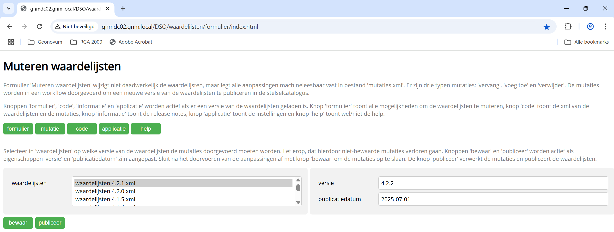
Er komen periodiek verzoeken binnen om waarden aan te passen of toe te voegen. Deze zullen niet afzonderlijk worden doorgevoerd maar vaak worden opgespaard, zodat er bijvoorbeeld pas na drie maanden een nieuwe versie wordt gepubliceerd. Je kunt daarom tussentijds mutaties met het webformulier ‘opsparen’ via de knop ‘bewaar’. Je kunt dan, nadat je het webformulier hebt geopend, direct doorgaan met het invoeren van nieuw binnengekomen mutaties.
Om een nieuwe versie van de waardelijsten te starten is het voldoende om in keuzelijst ‘waardelijsten’ een versie te selecteren. Je kiest hier feitelijk op welke waardelijst je wijzigingen wilt aanbrengen. Dit zal eigenlijk altijd de huidige versie zijn. In de rechterkolom moeten versie en publicatiedatum ingevuld worden. Pas daarna worden de knoppen ‘bewaar’ en ‘publiceer’ geactiveerd.
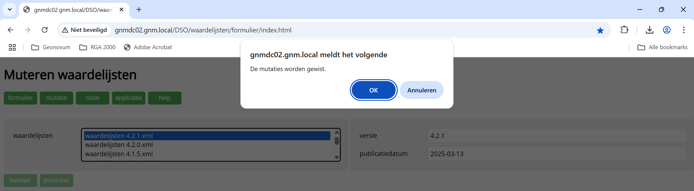
Knop ‘bewaar’
Wijzigingen worden niet automatisch opgeslagen in bestand ‘mutaties.xml’. Het is daarom noodzakelijk om na het invoeren van alle wijzigingen of tussentijds expliciet de mutaties op te slaan.
Knop ‘publiceer’
De knop ‘publiceer’ werkt op dit moment niet. Als het webformulier onderdeel is van de workflow, zal deze knop de verwerking van de volgende stappen starten.
In tabblad ‘formulier’ worden de daadwerkelijke mutaties ingevoerd. Het tabblad is opgebouwd in rijen:
waardelijst
waarde
bron
Je selecteert altijd eerst de waardelijst, vervolgens zie je in de keuzelijst in rij ‘waarde’ welke waarden uit de geselecteerde waardelijst eronder vallen.
Voor het muteren van een waarde kennen we drie opties:
vervang
voeg toe
verwijder
Let op!
In rij ‘waardelijst’ staat een tweede keuzelijst ‘domein’. In de eerste versies van waardelijst ‘thema’ werd een verdeling in domeinen gebruikt om een extra onderverdeling van thema’s aan te brengen. In latere versies is deze onderverdeling vervallen. Daardoor is de keuzelijst ‘domein’ niet meer relevant.
De linkerkolom bevat altijd de selectie, de rechterkolom bevat de bijbehorende informatie. Voor de meeste mutaties is het voldoende om een waardelijst en een waarde te selecteren, waarna definitie, toelichting, bron, symboolcode en deprecated kan worden gewijzigd.
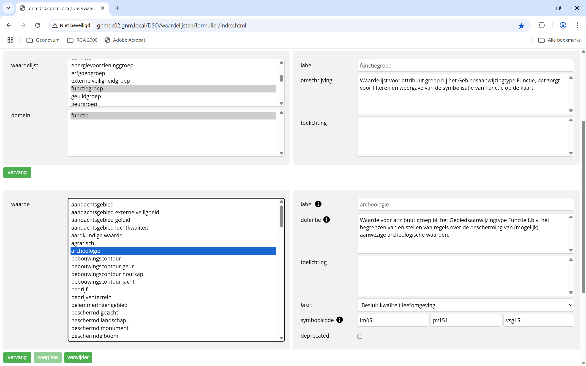
Om een waarde toe te voegen is het nodig om in keuzelijst ‘waarde’ de waarde te deselecteren. Dit gebeurt door de Ctrl-toets in te drukken en op de geselecteerde waarde te klikken.
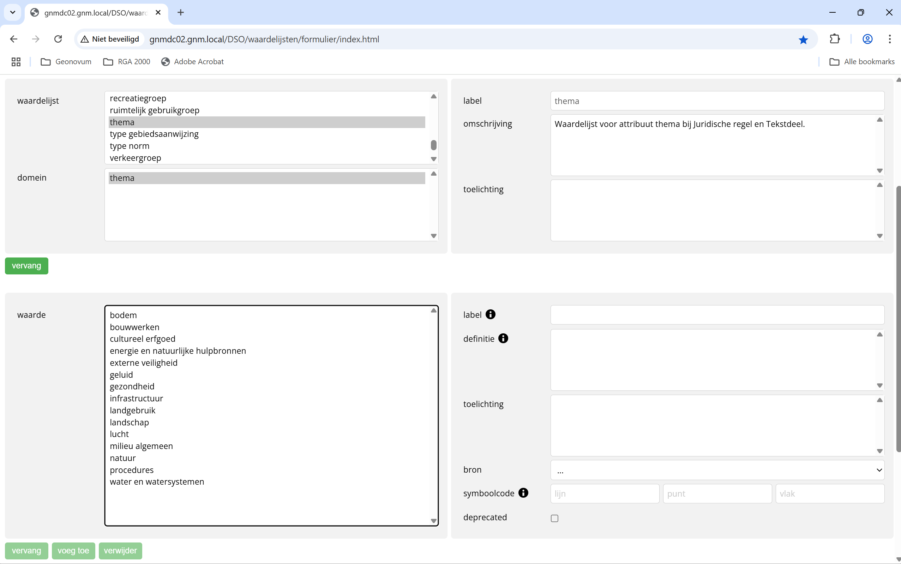
De knop ‘voeg toe’ wordt pas geactiveerd als de verplichte velden ‘label’ en ‘definitie’ zijn ingevuld. De velden ‘toelichting’ en ‘bron’ zijn optioneel. De eigenschap ‘deprecated’ betekent dat de waarde in de eerstvolgende x-wijziging zal vervallen. De waarde is nog wel beschikbaar, maar wordt na een jaar uit de waardelijst verwijderd. Als een waarde wordt aangemerkt als vervallen zet je dit vinkje aan.
Symboolcode
Speciale aandacht voor het veld ‘symboolcode’. Voor verschillende waardelijsten is vastgelegd welke symboolcodes voor lijn, punt en vlak zijn voorgeschreven. In tabblad ‘applicatie’ is dit in xml-formaat vastgelegd. Sommige waarden in de waardelijsten kennen een symboolcode. Wanneer je een nieuwe waarde toevoegt, moet er een willekeurige, ongebruikte symboolcode worden ingevuld. Het webformulier geeft een advies voor de keuze van symboolcode, gebaseerd op beschikbare symboolcodes. Het is verstandig om dit advies over te nemen. Het advies staat als grijze placeholder-tekst en moet opnieuw ingetypt worden. Als er bij een waarde geen symboolcode voorgesteld wordt, dan moet er geen symboolcode ingevuld worden.
Het webformulier bevat de mogelijkheid om een waarde te verwijderen. Dit is een riskante actie omdat het niet backward compatible is. Het zal daarom alleen bij een x-wijziging gebruikt worden. De waarde zal eerder als deprecated aangemerkt moeten zijn.
Er zijn een aantal bronnen die je kan gebruiken bij het toevoegen of wijzingen van waarden. Het toevoegen van een nieuwe bron aan de waardelijsten is ook een mutatie. Het is daarom niet mogelijk om in dezelfde versie de nieuwe bron toe te voegen en in een waarde te gebruiken. Dit moet vooraf in een afzonderlijke versie gebeuren. Om te voorkomen dat waarden verwijzen naar een verwijderde bron, is het niet mogelijk om bronnen te verwijderen.
In tabblad ‘mutatie’ kun je zien welke mutaties zijn ingevoerd en eventueel wijzigingen doorvoeren. Je kunt de onderliggende velden van mutaties vervangen en je kunt mutaties volledig verwijderen. Het is in dit tabblad niet mogelijk om mutaties toe te voegen. Hiervoor is tabblad ‘formulier’.
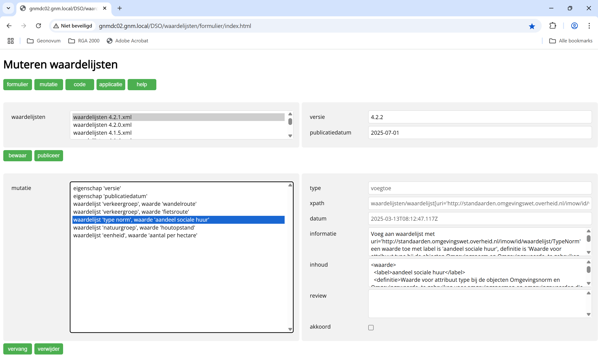
Een mutatie bevat de volgende velden:
‘type’ bevat het type mutatie: vervang, voegtoe, verwijder.
‘xpath’ bevat de machineleesbare selectie, die in workflow ‘Muteren’ wordt uitgevoerd.
‘datum’ bevat een datumtijdstempel.
‘informatie’ bevat de release notes die aan de versie van de waardelijsten wordt toegevoegd.
‘inhoud’ bevat de gewijzigde xml-code.
‘review’ biedt de mogelijkheid om een opmerking toe te voegen.
‘akkoord’ geeft aan dat de mutatie correct is doorgevoerd.
Kleine fouten kunnen grote gevolgen hebben. Binnen Geonovum wordt steeds vaker het vierogenprincipe toegepast. Het webformulier heeft daarom procedurele mogelijkheden met de velden ‘review’ en ‘akkoord’. Laat een tweede persoon in het webformulier een mutatie reviewen en accorderen, met behulp van de velden ‘review’ en ‘akkoord’. Het is verstandig om in de browser de spellingchecker aan te zetten. Je ziet daarmee snel of er typefouten zijn gemaakt. Je kunt in veld ‘inhoud’ de fout corrigeren. Is het een uitgebreide correctie kies er dan voor om de mutatie te verwijderen en deze opnieuw in te voeren in tabblad ‘formulier’.
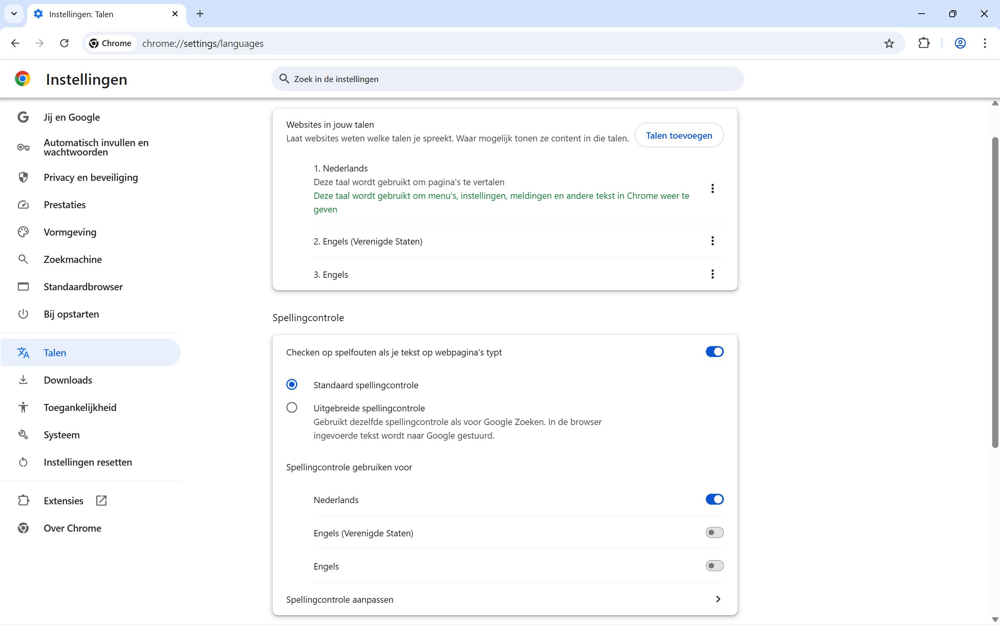
Het tabblad ‘code’ is bedoeld voor de ontwikkelaar. Het geeft de xml-code van de gebruikte versie van de waardelijsten en het bestand ‘mutaties.xml’.
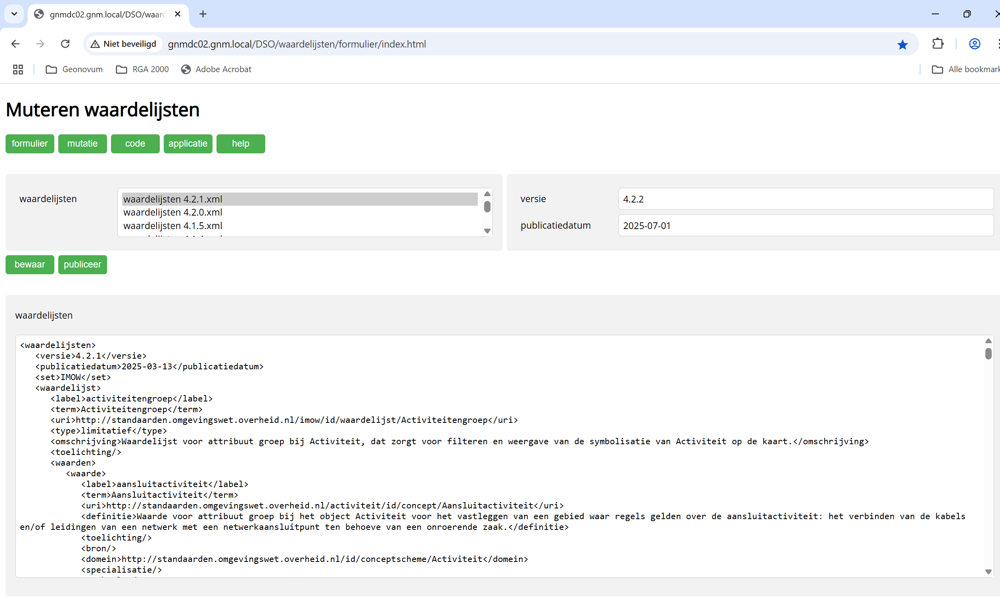
Voor het genereren van de beschikbare symboolcodes zijn twee bestanden nodig, namelijk ‘voorwaarden.xml’ en ‘symbolisatie.xml’. Het tabblad ‘applicatie’ geeft beide bestanden weer.
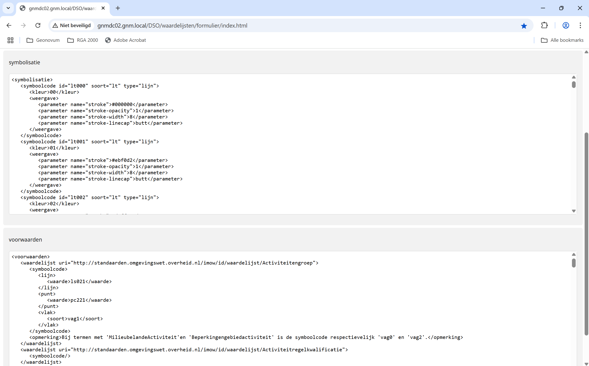
Symbolisatie
In bestand ‘symbolisatie.xml’ is vastgelegd welke symboolcodes beschikbaar zijn in symbolenbibliotheek 1.3.1. Het bestand is samengesteld op basis van de sld-bestanden.
<symboolcode id="lt000" soort="lt" type="lijn">
<kleur>00</kleur>
<weergave>
<parameter name="stroke">#000000</parameter>
<parameter name="stroke-opacity">1</parameter>
<parameter name="stroke-width">8</parameter>
<parameter name="stroke-linecap">butt</parameter>
</weergave>
</symboolcode>
Voorwaarden
In bestand ‘voorwaarden.xml’ is vastgelegd welke symboolcodes voor waarden in een waardelijst gebruikt mogen worden. Hier zijn drie variaties in:
Als zowel soort en kleur vastliggen, dan wordt de symboolcode vastgelegd met element ‘waarde’.
Als de soort vastligt en de kleur variabel is, dan wordt de symboolcode vastgelegd met element ‘soort’.
Als waarden in een waardelijst geen symboolcode heeft, blijft element ‘symboolcode’ leeg.
<waardelijst uri="http://standaarden.omgevingswet.overheid.nl/imow/id/waardelijst/Activiteitengroep">
<symboolcode>
<lijn>
<waarde>ls021</waarde>
</lijn>
<punt>
<waarde>pc221</waarde>
</punt>
<vlak>
<soort>vag1</soort>
</vlak>
</symboolcode>
<opmerking>Bij termen met 'MilieubelandeActiviteit'en 'Beperkingengebiedactiviteit' is de symboolcode respectievelijk 'vag0' en 'vag2'.</opmerking>
</waardelijst>
<waardelijst uri="http://standaarden.omgevingswet.overheid.nl/imow/id/waardelijst/Activiteitregelkwalificatie">
<symboolcode/>
</waardelijst>
Algoritme
Het webformulier kijkt in bestand ‘voorwaarden.xml’ aan welke voorwaarden de symboolcode van een waarde moet voldoen. Dan zijn er drie opties:
Element ‘symboolcode’ is leeg, dan krijgt de waarde geen symboolcode.
Element ‘symboolcode’ bevat element ‘waarde’, dan wordt de element ‘waarde’ overgenomen als symboolcode.
Element ‘symboolcode’ bevat element ‘soort’, dan is de kleur variabel. De kleur wordt op basis van de volgende stappen samengesteld:
Kijk hoe vaak elke kleur gebruikt is.
Kijk bij alle aantallen, beginnend bij het laagste aantal, welke kleuren nog niet gebruikt zijn. Kies uit deze kleuren random een kleur.
Selecteer in de bestand ‘symbolisatie.xml’ welke symboolcode de geselecteerde soort en kleur heeft.
Het webformulier staat nu nog op de Synology NAS. Het is de bedoeling dat dit onderdeel wordt van de workflow ‘Waardelijsten’. Tot die tijd is het nog noodzakelijk om het bestand ‘mutaties.xml’ zelf te downloaden. downloaden. Dit bestand bevat alle wijzigingen die zijn doorgevoerd in het webformulier. Het bestand wordt aangepast als je de mutaties opslaat met de knop ‘bewaar’. Je vindt het bestand op locatie ‘GNMDC02/web/DSO/waardelijsten/formulier/temp/mutaties.xml’, zie Figuur 24.
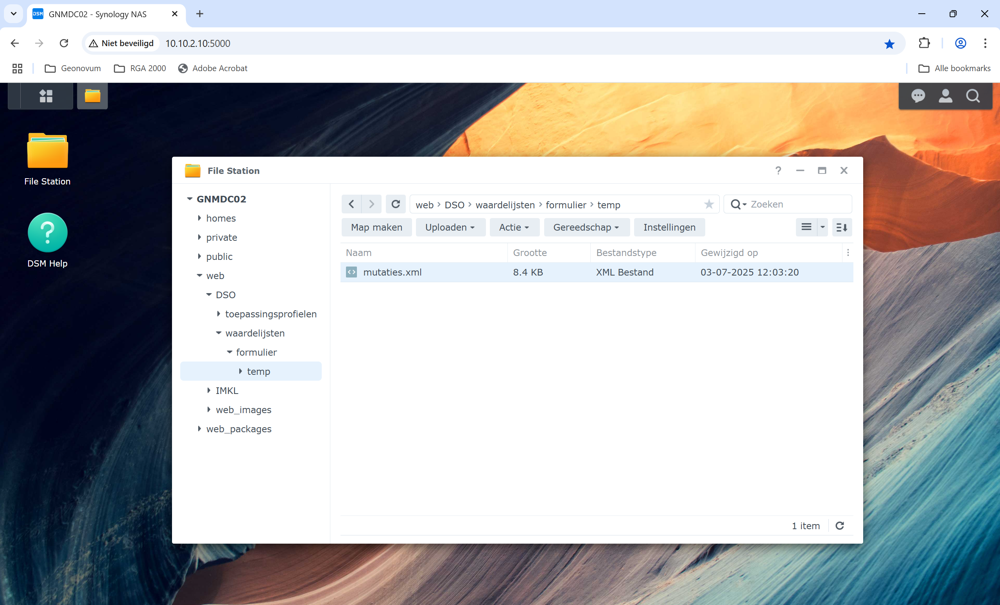
Het bestand ‘mutaties.xml’ bevat alle informatie die nodig is voor de verdere verwerking van een mutatie. Hierbij een voorbeeld:
<?xml version="1.0" encoding="UTF-8"?>
<mutaties op="archief/waardelijsten 4.2.1.xml" versie="4.2.2" publicatiedatum="2025-07-01">
<mutatie type="vervang" xpath="waardelijsten/versie">
<metadata>
<eigenschap>versie</eigenschap>
<datum>2025-06-30T19:45:50.865Z</datum>
<review akkoord="false"/>
</metadata>
<informatie>Vervang de inhoud van versie door '4.2.2'.</informatie>
<inhoud>
<versie>4.2.2</versie>
</inhoud>
</mutatie>
<mutatie type="vervang" xpath="waardelijsten/publicatiedatum">
<metadata>
<eigenschap>publicatiedatum</eigenschap>
<datum>2025-07-01T08:03:28.085Z</datum>
<review akkoord="false"/>
</metadata>
<informatie>Vervang de inhoud van publicatiedatum door '2025-07-01'.</informatie>
<inhoud>
<publicatiedatum>2025-07-01</publicatiedatum>
</inhoud>
</mutatie>
...
[In dit hoofdstuk volgt een beschrijving van de installatie en verwerking met Oxygen]
Stelselcatalogus Omgevingswet
Brigitte Meier: brigitte.meijer-kolenbrander@kadaster.nl
Patrick Calis: patrick.calis@kadaster.nl
Frans Cortenbach: frans.cortenbach@kadaster.nl
OZON
Brigitte Meier: brigitte.meijer-kolenbrander@kadaster.nl
Richard de Graaf: richard.degraaf@kadaster.nl
De algemene OZON-mailbox: zm_ozon.dso@kadaster.nl
Softwareleveranciers
Annetje Knaap: annetje@giskit.nl
Anno Jan Krottje: annojan.krottje@roxit.nl
Herman Assink: herman.assink@idgis.nl
Jordy Moos: jm.moos@pzh.nl
Klaas van der Molen: klaas.vandermolen@knowledge-values.com
Lodewijk Vos: lodewijkvos@cadac.nl
Thomas Wethmar: thomas.wethmar@xxllnc.nl